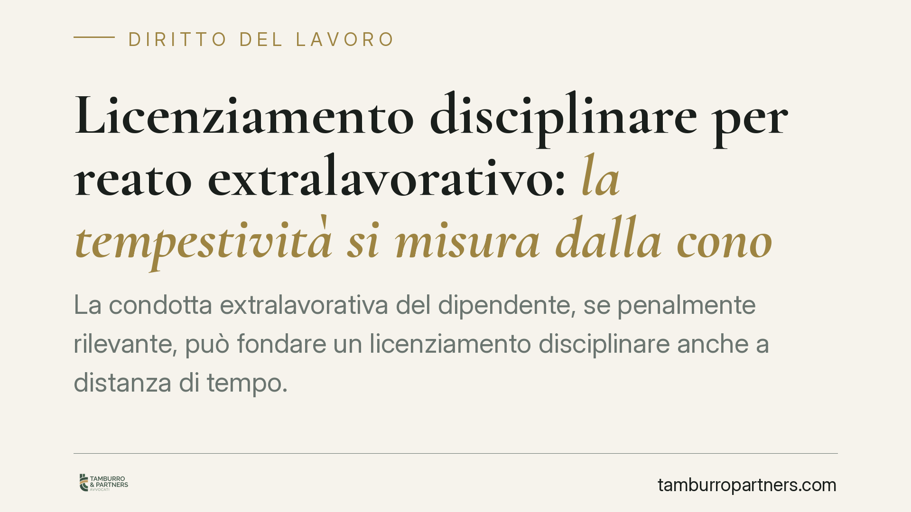

Licenziamento disciplinare per reato extralavorativo: la tempestività si misura dalla conoscenza dei fatti
La condotta extralavorativa del dipendente, se penalmente rilevante, può fondare un licenziamento disciplinare anche a distanza di tempo. Secondo un recente orientamento della Cassazione, quando il contratto collettivo lega la sanzione alla condanna definitiva, l'attesa del giudicato non rende tardiva la contestazione. Il nodo resta la nozione di immediatezza, che si misura dalla conoscenza effettiva dei fatti, non dalla loro commissione.

Il caso e il principio
Un dipendente con qualifica di quadro viene licenziato per una condotta estranea al rapporto di lavoro, ma penalmente rilevante, accertata a seguito di indagini e di un procedimento penale. Il lavoratore eccepisce la tardività della contestazione: tra i fatti e la sanzione sono trascorsi anni.
La Cassazione, sezione lavoro, ha affrontato il tema con una pronuncia del 2026 (il cui estremo numerico va verificato sulla banca dati ufficiale prima di ogni utilizzo in sede difensiva). Il principio è netto: quando il contratto collettivo applicabile subordina la rilevanza disciplinare della condotta extralavorativa all'esistenza di una condanna penale definitiva, il datore di lavoro può legittimamente attendere il passaggio in giudicato della sentenza senza che la successiva contestazione risulti tardiva.
Inquadramento normativo
Il perno è l'art. 7 della Legge n. 300/1970 (Statuto dei Lavoratori), che impone la contestazione preventiva e il rispetto del contraddittorio nel procedimento disciplinare. La norma non fissa un termine rigido, ma la giurisprudenza vi ha ricavato il principio di immediatezza: la contestazione deve seguire la conoscenza del fatto senza ingiustificato ritardo.
Questo principio è però elastico, non cronologico in senso assoluto. L'immediatezza si valuta a partire dalla *conoscenza effettiva e qualificata* dei fatti da parte del datore, non dal momento della loro commissione. Se il contratto collettivo applicabile al rapporto — occorre individuarne con precisione il testo e l'articolo, perché la regola non è automatica e dipende dalla clausola specifica — subordina la sanzione alla condanna definitiva, prima del giudicato il datore non dispone di una conoscenza giuridicamente idonea a fondare la contestazione.
Il confronto con l'orientamento consolidato
La decisione si inserisce in un filone coerente. La giurisprudenza di legittimità, anche a Sezioni Unite, ha da tempo chiarito che il dies a quo dell'immediatezza decorre dalla conoscenza qualificata del fatto in tutti i suoi elementi, e non dalla mera percezione di una notizia (si vedano le pronunce sulla cosiddetta immediatezza elastica, i cui estremi vanno verificati prima della citazione).
La distinzione tra commissione del fatto e conoscenza effettiva è il cuore del ragionamento. Senza di essa, il principio di garanzia a tutela del lavoratore si rovescerebbe in un ostacolo al legittimo esercizio del potere disciplinare quando la rilevanza della condotta dipende, per scelta delle parti sociali, da un accertamento penale definitivo.
Implicazioni pratiche
Per il datore di lavoro. La possibilità di attendere il giudicato non è una facoltà generale. Dipende dal tenore della clausola collettiva. Dove il CCNL àncora la sanzione alla condanna definitiva, l'attesa è giustificata; dove invece rende rilevante la condotta in sé, l'inerzia può integrare tardività e vizio del licenziamento. L'onere di dimostrare quando si è avuta conoscenza qualificata resta a carico del datore.
Per il lavoratore. L'eccezione di tardività non è un automatismo. Il suo esito dipende dal testo del contratto collettivo e dal momento in cui il datore ha acquisito una conoscenza idonea. La posizione del lavoratore destinatario di un procedimento disciplinare apparentemente tardivo va valutata verificando se il CCNL imponeva o meno l'attesa del giudicato penale.
Cosa fare in concreto
- Individuare con esattezza il CCNL applicabile al rapporto e la clausola che disciplina le condotte extralavorative e il loro collegamento con l'accertamento penale.
- Ricostruire la cronologia della conoscenza da parte del datore: data della notizia, data dell'accertamento, data del giudicato.
- Verificare se la clausola collettiva subordina la sanzione alla condanna definitiva o rende rilevante la condotta a prescindere.
- Conservare la documentazione del procedimento penale e delle comunicazioni ricevute, utile a stabilire il dies a quo dell'immediatezza.
- Valutare l'eventuale eccezione di tardività alla luce del testo contrattuale, non del solo intervallo temporale.
Un'avvertenza
La regola che consente di attendere la condanna definitiva non ha portata generale: opera solo quando è la fonte collettiva a imporlo. Fuori da questa ipotesi, torna applicabile il principio ordinario di tempestività calibrato sulla conoscenza effettiva del fatto.
Contributo informativo a cura di Tamburro & Partners - Avv. Giuseppe Tamburro. Non costituisce parere legale.
Ogni storia di lavoro ha i suoi tempi.
Se gestisci HR e vuoi un confronto su contenzioso, ispezioni o licenziamenti, scrivi allo studio. Ti rispondiamo entro un giorno lavorativo.